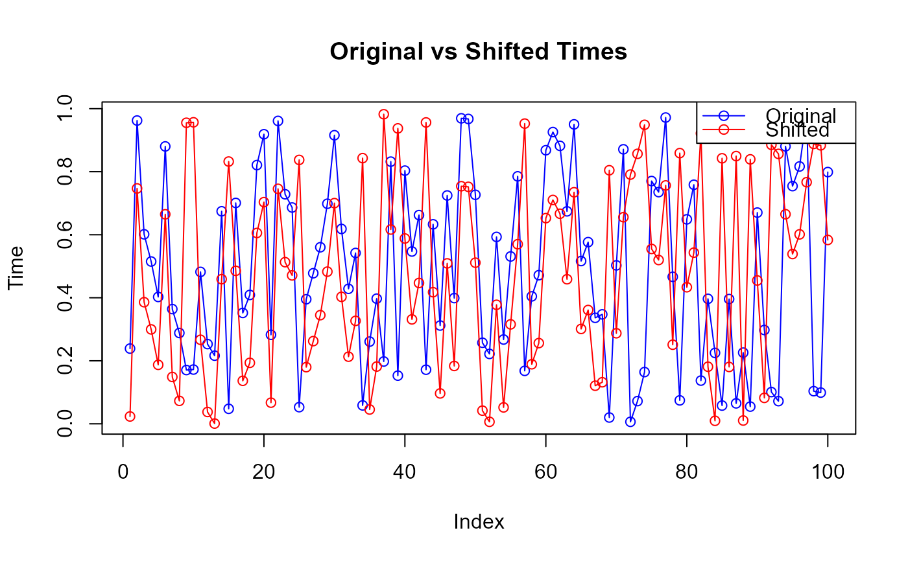

R/Random_shif.R
random.shift.RdPerforms a circular random shift of the temporal coordinate in a spatio-temporal point pattern. This operation preserves the spatial configuration while randomizing the temporal component under the assumption of temporal stationarity. The shift amount is drawn uniformly from \([0, 1]\) and applied modulo 1, ensuring that the time window is maintained. The resulting dataset can be used to construct null models for hypothesis testing of first-order separability or temporal independence.
random.shift(X, shifted_col = 3)A matrix or data frame (matching the input type) with the time column shifted modulo 1.
The circular random shift is a common resampling procedure for generating null models of temporal randomness while preserving the overall temporal marginal distribution and spatial structure.
For each dataset, a single uniform random shift value \(\Delta \sim \mathrm{Uniform}(0,1)\) is drawn and added to the temporal coordinate. The shifted times are then wrapped around the unit interval:
$$ t_i^{*} = (t_i + \Delta) \bmod 1, \quad i = 1, \dots, n. $$
Ghorbani, M., Vafaei, N., Dvořák, J., and Myllymäki, M. (2021). Testing the first-order separability hypothesis for spatio-temporal point patterns. Computational Statistics & Data Analysis, 161, 107245.
# \donttest{
set.seed(123)
X <- cbind(runif(100), runif(100), runif(100)) # x, y, t
X_shifted <- random.shift(X)
# Compare original and shifted time values
head(X[,3])
#> [1] 0.2387260 0.9623589 0.6013657 0.5150297 0.4025733 0.8802465
head(X_shifted[,3])
#> [1] 0.02330129 0.74693420 0.38594099 0.29960499 0.18714861 0.66482181
# Verify shift visually
plot(X[, 3], type = "o", col = "blue", ylab = "Time", xlab = "Index",
main = "Original vs Shifted Times")
lines(X_shifted[, 3], type = "o", col = "red")
legend("topright", legend = c("Original", "Shifted"),
col = c("blue", "red"), lty = 1, pch = 1)

# }